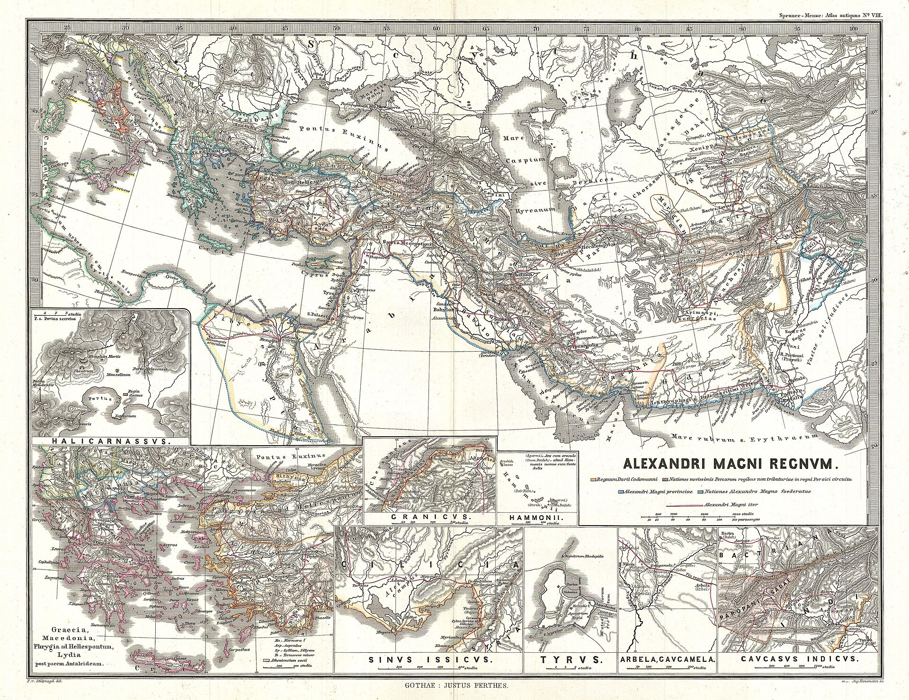
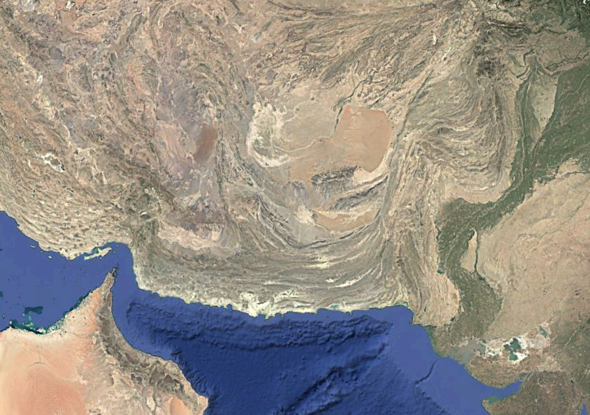
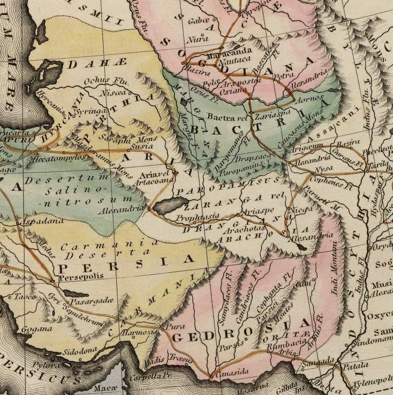

The Gedrosian March, 325 BCE
An interactive logistical atlas of Alexander the Great’s disaster in the Makran.
In 325 BCE, Alexander marched his army from the Indus delta westward through the Gedrosian desert and lost more men to thirst and heat than to every Persian battle combined. This atlas pairs the route with the logistical math behind the disaster — toggle routes, scale the army, and click a numbered marker for the ancient testimony on that stage of the march.
I. The Empire — Scholarly Reconstruction
Spruner, 1854
II. Makran Coast — Satellite View
Pakistani Balochistan · Ormara–Gwadar corridor

Routes and supply zone are stylized for legibility, not drawn to GIS scale. The logistical figures in the dashboard update with the army-size slider above. Figures follow Engels (1978): water at 9 L/person/day in desert conditions; grain at 1.4 kg/person/day; pack-animal ratio ~1:6.5; pack-animal payload ceiling approximately 5 days before self-consumption exceeds transport.
Ancient Witnesses Consulted in This Atlas
- Arrian, Anabasis of Alexander, Book 6 — itinerary, the flash flood, the water crisis, and the king’s own share of the suffering.
- Strabo, Geography, Book 15.2 — harshness of the Makran and the earlier failures of Cyrus and Semiramis.
- Plutarch, Life of Alexander, ch. 66 — the psychological toll and the disproportionate deaths among camp followers.